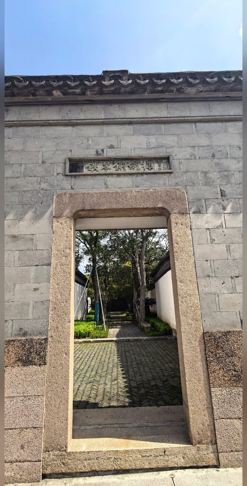
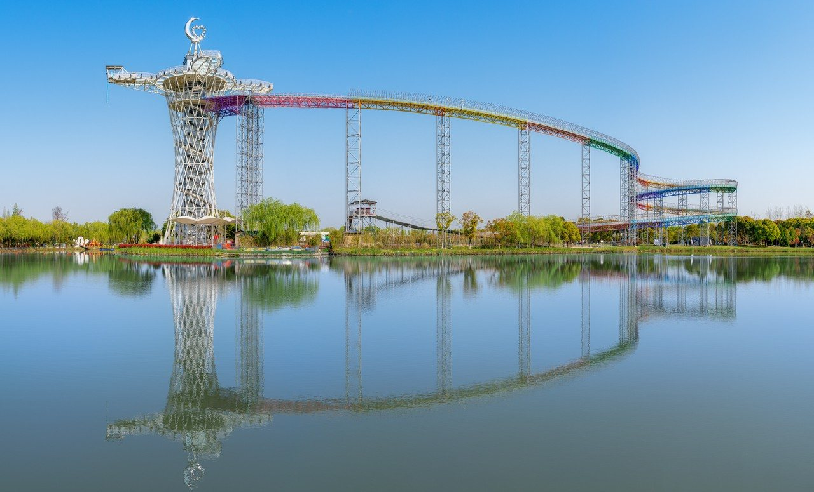
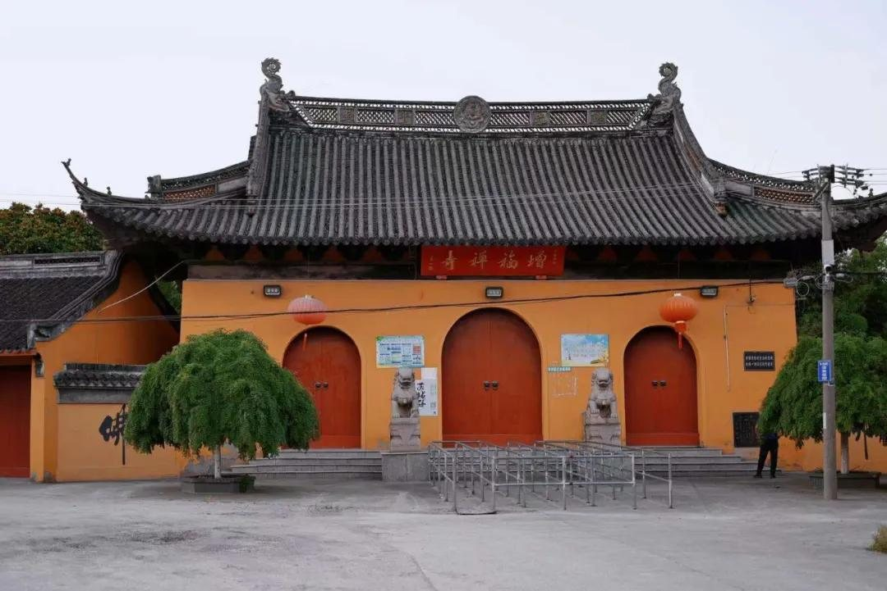
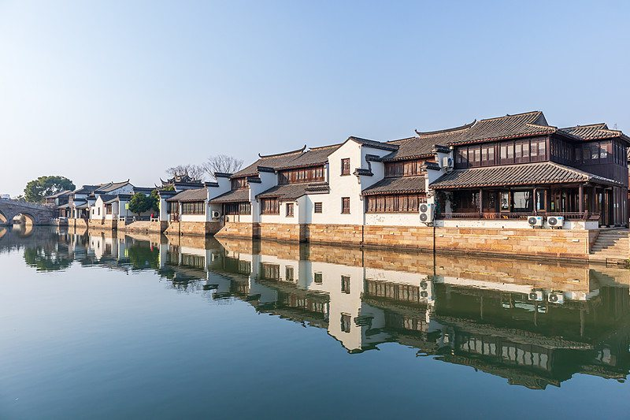
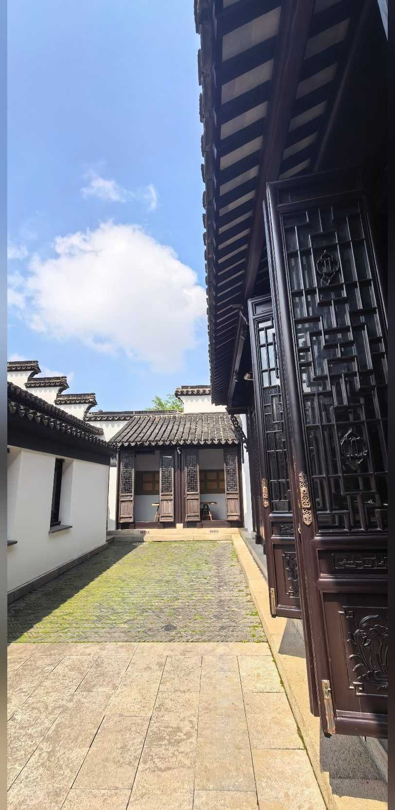
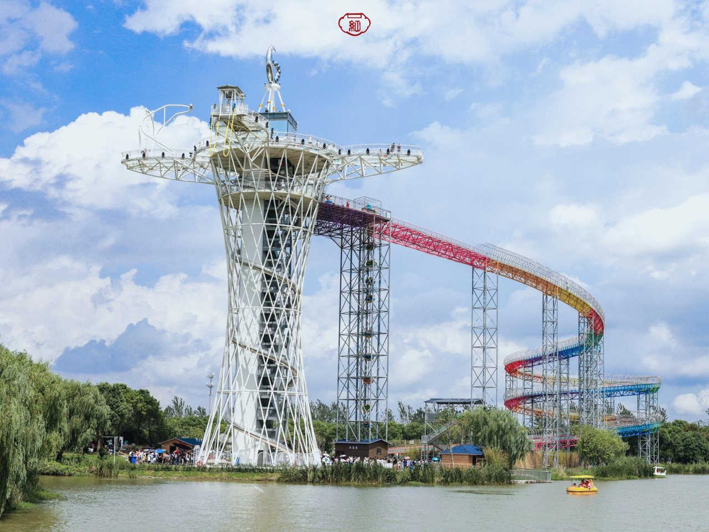
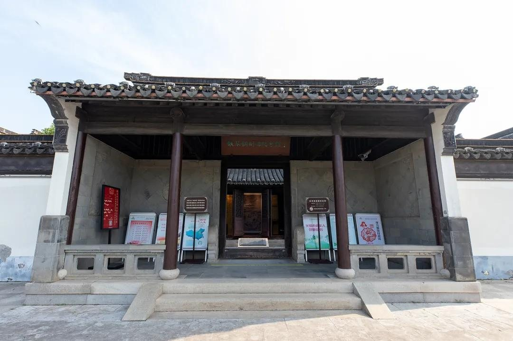
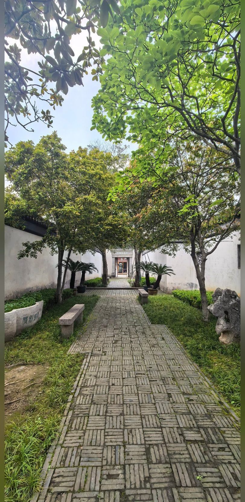
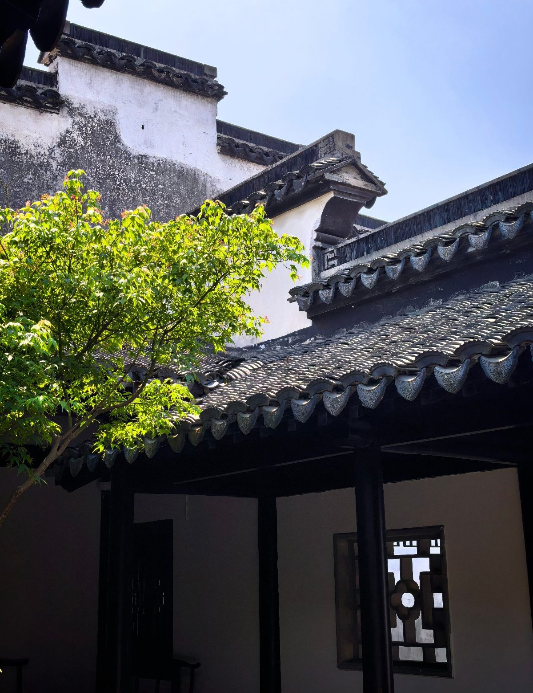
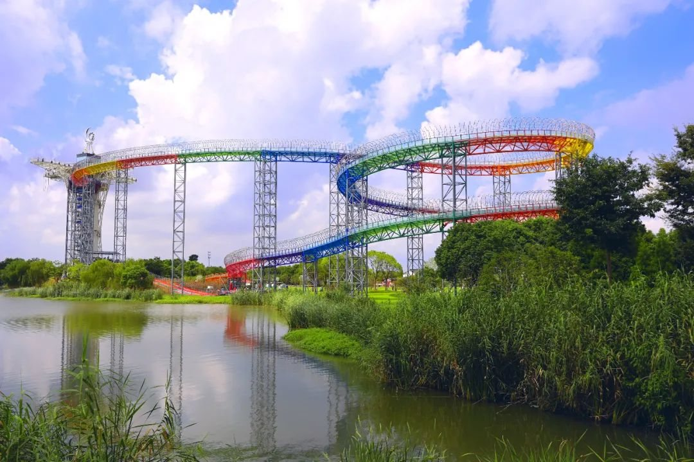

第 一 站
古里古镇 · 铁琴铜剑楼
漫步古镇沿河街区，白墙黛瓦、石桥流水，观景拍照打卡。随后参观百年藏书楼——铁琴铜剑楼，清代四大私家藏书楼之一，百年书香扑面而来，感受江南文脉的厚重传承。
一日尽览：藏书访古 · 登高望远 · 古寺静心
节奏从容、路况平稳，人文与风光一路相伴

漫步古镇沿河街区，白墙黛瓦、石桥流水，观景拍照打卡。随后参观百年藏书楼——铁琴铜剑楼，清代四大私家藏书楼之一，百年书香扑面而来，感受江南文脉的厚重传承。

11:50 抵达，景区内统一用餐休整。12:40 起园内游览：打卡五百年古红豆树，参观钱柳纪念馆，追寻钱谦益与柳如是的白发红颜传奇；漫步园林、观景拍照。更可登上 66 米"小红蛮腰"玻璃观景平台，俯瞰全园。
温馨提示：高空漂流为收费项目，考虑老年朋友身体状况，本次游程不含漂流，仅限登高观景拍照。

于红豆山庄南门集合，前往古寺游览。增福禅寺免费开放，黄墙黛瓦、梵音袅袅，静心漫步、祈福赏景、打卡留念，停留约 30 分钟。15:00 全天行程圆满结束，集合乘车返程。
66 米高的地标观景塔，形似迷你广州塔。四个四叶草造型玻璃观景平台凌空探出，脚下是告白心岛与开阔湖面，晴空之下镜面倒影如梦似幻——举起手机，每一帧都是大片。
藏书访古、姻缘寻踪、高空观景、古寺静心——一天之内，五种体验
清代四大私家藏书楼之一，百年书香扑面，沿河古街白墙黛瓦，水乡韵味十足。
五百年红豆古树见证钱谦益与柳如是的白发红颜传奇，馆内细品明末文人风骨。
登 66 米"小红蛮腰"玻璃平台，上帝视角俯瞰告白心岛与湖光倒影。
增福禅寺梵音袅袅，免费开放，黄墙黛瓦间漫步祈福，放空身心。
全天路况平稳、节奏从容，人文景点与自然风光兼备，秋日出游正当时。
点击任意图片查看大图 · 支持左右切换

古镇水乡
庭院回廊
观景塔航拍
古镇街景
楼前园径
檐角风姿
山庄水岸藏书访古、登高望远、古寺静心，一日尽览江南秋色。具体出行日期以班级通知为准。